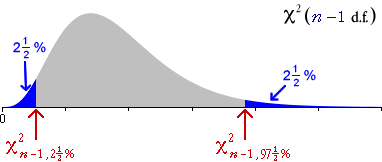
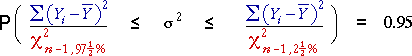
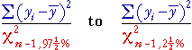
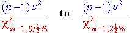
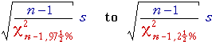

Bad confidence interval for variance
All 95% confidence intervals that we have encountered so far have been of the form
where k is a constant close to 2 (from normal or t tables). This suggests that we might try a confidence interval for σ2 of the form
A confidence interval of this form does not work well because the distribution of S2 is so skew.
Confidence interval based on chi-squared distribution
A 95% confidence interval for σ2 should be based on the chi-squared distribution of the sum of squares about the sample mean,
From this chi-squared distribution, we can write
where the two red values are quantiles of the chi-squared distribution and can be found from printed tables or computer software.

Rearranging the left and right inequalities then putting them back together,

A 95% confidence interval for σ2 is therefore

Or, in terms of the sample variance,

Confidence interval for standard deviation
To obtain a 95% confidence interval for the standard deviation, σ, we simply take the square root of both ends of the interval,

Illustration of calculations
The diagram below shows a random sample from a normal population and the calculations for obtaining a 95% CI for σ.
Click Take sample and change the sample size to see the calculations illustrated for different data sets.
Note that:
The confidence intervals are surprisingly wide — you need an extremely large sample size to estimate the standard deviation accurately.